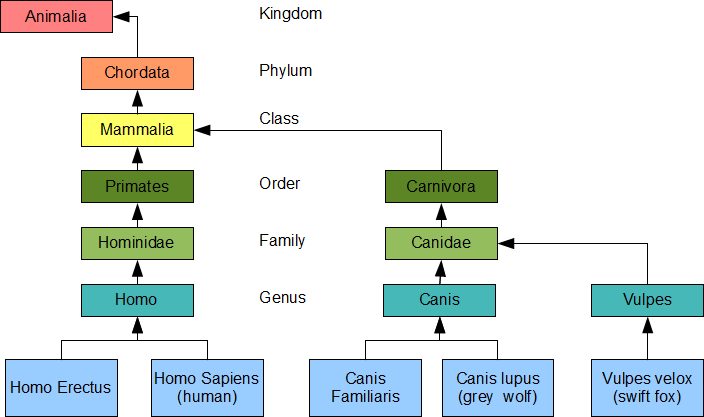

|
Part D - Inheritance
Derived Classes Relate classes using inheritance hierarchies to minimize the duplication of object code Introduce the terminology and syntax of derived classes Specify access to the protected members of a base class "Public inheritance must always model 'is-a' ('works-like-a')" (Liskov, 1988) Object-oriented languages implement reusability of coding structure through inheritance. Inheritance is the second most prominent concept next to encapsulation. It refers to the relationship between classes where one class inherits the entire structure of another class. Inheritance is naturally hierarchical, a tighter relationship than composition and the most highly coupled relationship after friendship. This chapter introduces the terminology used to describe an inheritance relationship and the syntax for defining a class that inherits the structure of another class. This chapter includes specification of accessibility privileges between classes within a hierarchy. Hierarchies A comprehensive example of inheritance relationships is the Linnaean Hierarchy in Biology (a small portion is shown below). The Linnaean hierarchy relates all biological species in existence to one another. Proceeding from the bottom of the hierarchy, we identify a human as a Homo, which is a Hominidae, which is a Primate, which is a Mammal, which is a Chordata, which is an Animal. Similarly a dog is a Canis, which is a Canidae, which is a Carnivora, which is a Mammal, which is a Chordata, which is an Animal.  Carl Linnaeus earned himself the title of Father of Taxonomy after developing this hierarchy. He grouped the genera of Biology into higher taxa based on shared similarities. Using his taxa along with modern refinements, we say that the genus Homo, which includes the species Sapiens, belongs to the Family Hominidae, which belongs to the Order Primates, which belongs to the Class Mammalia, which belongs to the Phylum Chordata, which belongs to the Kingdom Animalia. For more details see the University of Michigan Museum of Zoology's Animal Diversity Site. Inheritance in Hierarchies Inheritance is a transitive structural relationship. A human inherits the structure of a Homo, which inherits the structure of a Hominoid, which inherits the structure of a Primate, which inherits the structure of a Mammal, which inherits the structure of a Chordata, which inherits the structure of an Animal. Inheritance is not commutative. A Primate is an Animal, but an Animal is not necessarily a Primate: dogs and foxes are not Primates. Primates have highly developed hands and feet, shorter snouts and larger brains than dogs and foxes. Terminology is a kind of The relative position of two classes in a hierarchy identifies their inheritance relationship. A class lower in the hierarchy is a kind of the class that is higher in the hierarchy. For example, a dog is a kind of canis, a fox is a kind of Vulpes and a human is a kind of Homo. In our course example from the first chapter, a Hybrid Course is a kind of Course. We depict an inheritance relationship by an arrow pointed to the inherited class.
The Hybrid Course class inherits the entire structure of the Course class. Derived and Base Classes We call the child in an is-a-kind-of relationship the derived class and we call the parent in the relationship the base class; that is, the Hybrid Course class is a derived class of the Course base class. A derived class is lower in the hierarchy, while its base class is higher in the hierarchy. The derived class inherits the entire structure of its base class. The inheritance arrow extends from the derived class to the base class:
We depict an object of a derived class by placing its instance variables after the instance variables of its base class in the direction of increasing addresses in memory:
A derived class object contains the instance variables of the base class and those of the derived class, while a base class object only contains the instance variables of the base class. The terms base class and derived class are C++ specific. Equivalent terms for these object-oriented concepts include:
Inherited Structure A derived class contains all of the instance variables and all of the normal member functions of its base class in addition to its own instance variables and member functions. A derived class does not inherit the base class' special functions: constructors, destructors or assignment operators. The term normal member function excludes these special member functions. Definition of a Derived Class The definition of a derived class takes the form
class Derived : access Base {
// ...
};
where Derived is the name of the derived class and Base is the name of the base class. access identifies the access that member functions of the derived class have to the non-private members of the base class. The default access is private. The most common access is public. Example A Student is a kind of Person. Every Person has a name. Accordingly, let us derive our Student class from a Person class, where the Person class includes an instance variable that holds a name in the form of a character string. The header file for our Student class contains our definitions of the base and derived classes:
The implementation file defines the member functions:
The following client code uses this implementation to produce the results on the right:
Note that the main() function refers to the Student type, without referring to the Person type. Here, the hierarchy itself is invisible to the client code. We can upgrade the hierarchy without having to alter the client code in any way. Access The C++ language supports three modifiers for granting access to the members of class:
Since the data member of the Person class is private, the member functions of our Student class and the client code cannot access that data member. Since the member functions of the Person and Student classes are public, the main() function can access all of them. Limiting Access to Derived Classes The keyword protected limits access to members of a derived class. For example, let us limit access to displayName() to classes derived for the Person class. Then, the main() function cannot call this member function and we must call it directly from Student::display(). The header file limits the access:
Our implementation of Student::display() calls displayName() directly:
We refer to displayName() directly without any scope resolution as if this function is a member of our Student class. The following client code produces the output shown on the right:
Avoid Granting Protected Access to Data Members Granting data members protected access introduces a security hole. If a derived class has protected access to any data member of its base class, any member function of the derived class can circumvent any validation procedure in the base class. If the base class in the above example granted client code access to the person data member, we could change its contents from our Student class to a string of more than NC characters, which would probably break our Student object. Good Design Tip Granting protected access to any data member exposes that member to potential corruption and is considered poor design. A protected read-only query is a preferable alternative to protected access to a data member. The query does not allow any modification of the value in the data member. Summary
Exercises
|